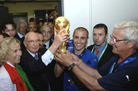

ФУТБОЛ
Футбо́л
—
командный вид спорта, в котором целью является забить мяч в ворота соперника
ногами или другими частями тела (кроме рук) большее количество раз, чем команда соперника.
Есть 17
официальных правил игры, каждое из которых содержит список оговорок и руководящих принципов. Эти
правила предназначены для применения на всех уровнях футбола, хотя есть некоторые изменения для
таких
групп, как юниоры, взрослые, женщины и люди с ограниченными физическими возможностями. Законы
очень
часто формулировались в общих чертах, которые позволяют упростить их применения в зависимости от
характера игры.